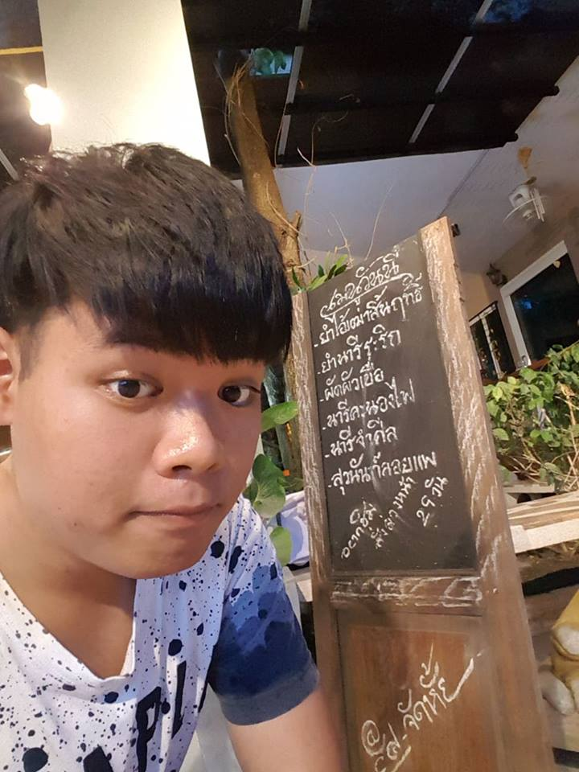

LOTTERY |
|---|
สถิติรางวัลกินแบ่งรัฐบาล |
เลขหน้า3ตัว |
เลขท้าย3ตัว |
เลขท้าย2ตัว |
Synopsis |
Team |
|---|
สถิติรางวัลกินแบ่งรัฐบาล |
|---|
สถิติเลขหน้า3ตัวที่ออกตั้งแต่ปี2556-2561สถิติเลขท้าย3ตัวที่ออกตั้งแต่ปี2556-2561สถิติเลขท้าย2ตัวที่ออกตั้งแต่ปี2556-2561 |
|---|
เลขหน้า3 ตัว |
|---|
เลขหน้าสามตัว-เลขหลักร้อย |
|
จากการวิเคราะห์ข้อมูลจากกราฟได้แสดงให้เห็นว่ารางวัลจับฉลากเลขหน้า 3 ตัวในหลักร้อย มีเลขที่ออกมากที่สุด ในช่วงเวลาปี 2556-2561 คือเลข 1 ซึ่งออกเลขมาเป็นจำนวน 57 ครั้ง และเลขที่ออกน้อยที่สุดคือเลข 9 ซึ่งออกเลขมาเป็นจำนวน 0 ครั้งจากทั้งหมด 240 ครั้ง |
|---|
เลขหน้าสามตัว-เลขหลักสิบ |
|
จากการวิเคราะห์ข้อมูลจากกราฟได้แสดงให้เห็นว่ารางวัลจับฉลากเลขหน้า 3 ตัวในหลักสิบ มีเลขที่ออกมากที่สุด ในช่วงเวลาปี 2556-2561 |
|---|
เลขหน้าสามตัว-เลขหลักหน่วย |
|
จากการวิเคราะห์ข้อมูลจากกราฟได้แสดงให้เห็นว่ารางวัลจับฉลากเลขหน้า 3 ตัวในหลักหน่วย มีเลขที่ออกมากที่สุด ในช่วงเวลาปี 2556-2561 |
|---|
เลขท้าย3 ตัว |
|---|
เลขท้ายสามตัว-เลขหลักร้อย |
|
จากการวิเคราะห์ข้อมูลจากกราฟได้แสดงให้เห็นว่ารางวัลจับฉลากเลขท้าย 3 ตัวในหลักร้อย มีเลขที่ออกมากที่สุด ในช่วงเวลาปี 2556-2561 |
|---|
เลขท้ายสามตัว-เลขหลักสิบ |
|
จากการวิเคราะห์ข้อมูลจากกราฟได้แสดงให้เห็นว่ารางวัลจับฉลากเลขท้าย 3 ตัวในหลักสิบ มีเลขที่ออกมากที่สุด ในช่วงเวลาปี 2556-2561 |
|---|
เลขท้ายสามตัว-เลขหลักหน่วย |
|
จากการวิเคราะห์ข้อมูลจากกราฟได้แสดงให้เห็นว่ารางวัลจับฉลากเลขท้าย 3 ตัวในหลักหน่วย มีเลขที่ออกมากที่สุด ในช่วงเวลาปี 2556-2561 |
|---|
เลขท้าย 2ตัว |
|---|
เลขท้ายสองตัว-เลขหลักสิบ |
|
จากการวิเคราะห์ข้อมูลจากกราฟได้แสดงให้เห็นว่ารางวัลจับฉลากเลขท้าย 2 ตัวในหลักสิบ มีเลขที่ออกมากที่สุด ในช่วงเวลาปี 2556-2561 |
|---|
เลขท้ายสองตัว-เลขหลักหน่วย |
|
จากการวิเคราะห์ข้อมูลจากกราฟได้แสดงให้เห็นว่ารางวัลจับฉลากเลขท้าย 2 ตัวในหลักหน่วย มีเลขที่ออกมากที่สุด ในช่วงเวลาปี 2556-2561 |
|---|
สรุป |
|---|
|
จากการวิเคราะห์ข้างต้นจะได้ผลสรุปดังนี้ |
|---|
OUR TEAM |
|---|
|

|
|
|
|---|---|---|
| Norrawit Manapattananukul | Anawin Bangthestham | Araya Thongleg |
61070098 |
61070256 |
61070270 |